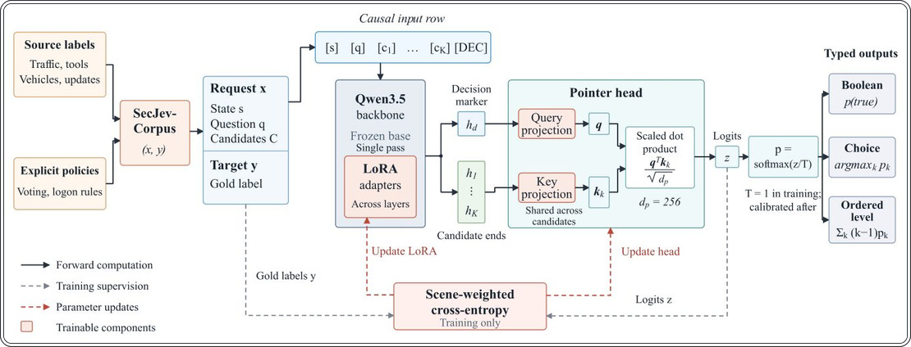

SecJev: kiberxavfsizlikda qaror qabul qiluvchi yangi sun'iy intellekt


Rasmning to'liq tavsifi
1-rasm: SecJevʼning umumiy qaror qabul qilish yoʻli va xavfsizlik moslashuvi. Manba izohlari va aniq siyosatlar soʻrovlar va maqsadlarni taqdim etadi. Qatlamli LoRA adapterlariga ega yagona magistral tarmoq (backbone) qaror markerlari va yakuniy nomzod holatlarini hosil qiladi; koʻrsatkich boshi (pointer head) tiplashtirilgan chiqish maʼlumotlarini olish uchun nomzodlarni baholaydi. Uzluksiz chiziqlar oʻqitish va xulosa chiqarish jarayonida hisoblashning toʻgʻridan-toʻgʻri uzatilishini bildiradi. Kulrang shtrixli chiziqlar sahna vaznlari hisobga olingan holda kross-entropiya uchun etalon yorliqlar va logitlarni uzatadi; marjon rangli shtrixli chiziqlar faqat LoRA va bosh qismini yangilaydi, magistral tarmoqni esa oʻzgarishsiz qoldiradi. Umumiy qarorlarni initsializatsiya qilish 0.8B/4B/9B uchun rasmiy Kev modellaridan va bizning oldindan oʻqitilgan 2B modelimizdan foydalanadi.
Tadqiqotchilar kiberxavfsizlik sohasida qaror qabul qilish uchun SecJev modellar oilasini taqdim etishdi. Oddiy chat-botlardan farqli o'laroq, bu tizimlar aniq siyosatlar va ma'lumotlarga tayanib, tizimli javoblar qaytaradi. Tizim tarmoq trafigini tahlil qilishdan tortib, prompt-inyeksiyalarni aniqlashgacha bo'lgan vazifalarda yuqori samaradorlik ko'rsatdi.
Asosiysi
- SecJev-0.8B umumiy Kev-9B modelidan 20.51% ga aniqroq ishlaydi.
- Ma'lumotlar bazasi 14 ta xavfsizlik vazifasini qamrab oladi.
- LoRA-adapterlar yordamida samarali moslashuv ta'minlanadi.
Batafsil
SecJev murakkab kuzatuvlarni tuzilmaviy qarorlarga aylantiruvchi «System One» arxitekturasidan foydalanadi. 0.8B dan 9B parametrgacha bo'lgan modellar 170 185 ta savoldan iborat SecJev-Corpus bazasida o'qitilgan. Bu bazaga tarmoq trafigi, autentifikatsiya loglari va transport tizimlari xabarlari kiritilgan. «Ssenariy bo'yicha vaznli o'qitish» usuli turli domenlarga moslashish imkonini beradi.
Asosida nomzodlarni bir bosqichda baholash tizimi yotadi, u mantiqiy va tanlovli javoblar uchun ehtimollikni hisoblaydi. Asosiy arxitektura muzlatilgan holda qolib, xavfsizlik vazifalari uchun LoRA-adapterlar (Low-Rank Adaptation) yordamida moslashtiriladi. Sinovlarda SecJev-0.8B umumiy Kev-9B modelidan makro-aniqlik bo'yicha 20.51 foizga ustun keldi.
Cheklovlar
Natijalarning aniqligi dastlabki ma'lumotlar sifatiga bog'liq va trafik turlariga qarab noto'g'ri signallar berishi mumkin.
Maqolaning batafsil tahlili
Annotatsiya
Xavfsizlik jarayonlarini avtomatlashtirish murakkab kuzatuvlar va aniq siyosatlarni qarorlarga aylantira oladigan modellarni talab qiladi. Mualliflar xavfsizlik vazifalari uchun moslashtirilgan, 0,8 mlrd dan 9 mlrd gacha parametrga ega SecJev modellar oilasini taqdim etadilar. Arxitektura Kev bir o‘tishli nomzodlar skoreriga (single-pass candidate scorer) asoslangan bo‘lib, u modelga matnli ma’lumotlar, telemetriya va kuzatuvlar tarixi asosida mantiqiy (bulev), tanlovli va tartiblangan qarorlarni qabul qilishni o‘rgatadi.
Izoh
Bir o‘tishli skorer (single-pass candidate scorer) — bu model ma’lumotlarni qayta ishlashning bir siklida qaror variantlarini baholaydigan usul bo‘lib, u ko‘p bosqichli generativ jarayonlarga qaraganda tizim tezligini sezilarli darajada oshiradi.
Modellarni o‘qitish va baholash uchun sakkizta ma’lumot manbasidan 14 ta turli vazifani birlashtirgan SecJev-Corpus ishlab chiqildi. To‘plamga tahlil vositalari natijalari, tarmoq trafigi, federativ yangilanishlar, autentifikatsiya ma’lumotlari va transport tizimlari xabarlari kiritildi. Ssenariy bo‘yicha vaznli o‘qitish (scene-weighted training) modellarni har bir soha xususiyatlariga moslashtirishga va shu bilan birga qaror qabul qilishning yagona interfeysini saqlab qolishga imkon berdi.
Muhim
Xavfsizlik vazifalariga ixtisoslashuv oiladagi barcha modellarning samaradorligini oshirdi: SecJev-0,8B umumiy Kev-9B modelidan vazifalar makro-aniqligi bo‘yicha 20,51 foiz punktga ustun keldi.
Generativ nozik sozlash (generative fine-tuning) usullari bilan solishtirish, inferens vaqtida operativ xotiradan kamroq foydalangan holda o‘xshash aniqlik va kechikishni ko‘rsatdi. Yangi manbalar guruhlarida o‘tkazilgan testlar SecJevning prompt-inyeksiyalarni filtrlash va trafikni tahlil qilish vazifalaridagi ustunligini tasdiqladi. Mualliflar model kiruvchi ma’lumotlar turiga bog‘liq bo‘lgan noto‘g‘ri signallarga (false alarms) moyil ekanligini ta’kidlaydilar. Adapterlar, qaror qabul qilish bloklari, ma’lumotlar korpusi va dastur kodi ochiq foydalanishga chiqarildi.
Ehtiyot bo'ling
Tadqiqot arxitekturaning amaliy sinovidir; natijalar o‘quv tanlamasi (SecJev-Corpus) sifatiga bog‘liq va aniq noto‘g‘ri signallar real foydalanish sharoitida qo‘shimcha tahlilni talab qiladi.
Kirish
Xavfsizlik ish jarayonlari murakkab kuzatuvlarni qarorlarga aylantiradi: autentifikatsiya tarixidan tortib ovoz berish dalillarigacha. Jev modellari (2026-yilda taqdim etilgan) toʻgʻridan-toʻgʻri tiplashtirilgan qarorlar va ehtimolliklarni qaytaradi. Ushbu ishda SecJev — xavfsizlik vazifalari uchun ixtisoslashgan modellar oilasi (0,8 mlrd, 2 mlrd, 4 mlrd va 9 mlrd parametrli) taqdim etiladi. Ular adapterlar va qaror qabul qiluvchi blok (decision head) orqali oʻqitilgan.
Muhim
SecJev xavfsizlik sohasidagi birinchi model boʻlib, u 9 mlrd parametrli hajmi bilan umumiy Kev modellaridan 20,51 foiz punktga ustunlik qiladi.
Oʻqitish uchun 170 185 ta savoldan iborat SecJev-Corpus korpusi yaratildi. U tarmoq trafigi, federativ oʻqitish, autentifikatsiya va transport vositalari xabarlarini qamrab oladi. Model Boolean, choice va ordered turidagi javoblarni qoʻllab-quvvatlaydi.
Related Work
Mavjud yondashuvlar (masalan, CyberBench, SecBench) til modellarini ixtisoslashtirilgan sozlashga qaratilgan. SecJev Jev arxitekturasini LoRA (low-rank adaptation) va ishonchlilikni baholash uchun haroratni oʻlchash (temperature scaling) orqali rivojlantiradi. Generativ modellardan farqli oʻlaroq, SecJev yagona oʻtishli (single-pass) nomzodlar skoreridan foydalanadi.
Izoh
LoRA — neyron tarmoqlarni samarali sozlash usuli boʻlib, unda modelning barcha parametrlari emas, balki faqat kichik qoʻshimcha qatlamlar oʻqitiladi.
Decision Interface
Sena s holati (matn, telemetriya yoki kuzatuvlar tarixi) va bir yoki bir nechta savollardan iborat. Har bir savol q yoʻriqnomasi va C nomzodlar toʻplamini oʻz ichiga oladi. Tizim soʻrovlarni mustaqil sabab-oqibat qatorlari sifatida qayta ishlaydi.
Single-Pass Candidate Scoring
Qaror qabul qilish uchun h_d (qaror markeridagi) va h_k (nomzod k oxiridagi) yashirin holatlardan foydalaniladi. Ular d_p = 256 oʻlchamli fazoga proyeksiyalanadi. Nomzodning ehtimolligi p(c_k/ s, q, C) skalyar koʻpaytmaning eksponentasi orqali hisoblanadi. Avtoregressiv token generatsiyasi qoʻllanilmaydi.
Ehtiyot bo'ling
Cheklov: usulning aniqligi nomzodlar tavsifi va kiruvchi maʼlumotlar tuzilishiga bogʻliq, chunki model matn generatsiya qilmaydi, balki taklif etilgan variantlardan tanlaydi.
Xavfsizlik moslashuvi
0.8B, 4B va 9B modellar mavjud Kev adapterlari va bosh qismlaridan foydalanadi. 2B modeli dastlab Qwen3.5-2B-Base bazasida Kev ma'lumotlari va sanalar bo'yicha mulohaza yuritishni qamrab oluvchi qo'shimchalar bilan o'qitiladi. Barcha to'rtta model uch epoxali xavfsizlik treningidan o'tadi. Asosiy arxitektura muzlatilgan holda, 16-rangli LoRA adapterlari (skalirlash koeffitsienti 32, dropout 0.05) va pointer-head o'qitiladi. Adapterlar diqqat mexanizmlari, feed-forward va DeltaNet proyeksiyalarini qamrab oladi. Har bir xavfsizlik savoli har bir epoxada bir marta beriladi. Ssenariylarni muvozanatlash uchun 1/m_i vazn koeffitsienti qo'llaniladi.
Muhim
Xavfsizlik bo'yicha o'qitish uch epoxa davomida LoRA adapterlari yordamida amalga oshiriladi, bu asosiy model parametrlarini o'zgartirmasdan moslashish imkonini beradi.
Barcha chiqish turlari uchun qo'shimcha tartibli masofa yo'qotishisiz nomzodlar kross-entropiyasi qo'llaniladi. Kalibrlash uchun alohida to'plamdan foydalanib, manfiy log-ehtimollikni (NLL) minimallashtirish orqali skalyar harorat tanlanadi.
SecJev-Corpus
SecJev-Corpus 115 324 ssenariy va sakkizta manbadan olingan 170 185 ta savolni o'z ichiga oladi (1-jadval). Ulardan 137 067 tasi mantiqiy (Boolean), 25 721 tasi tanlovli va 7 397 tasi tartiblangan savollardir. Vazifalar manba annotatsiyalarini bashorat qilish va qoidalar asosida siyosatni baholashga qaratilgan.
Vazifalarni shakllantirish
AgentDojo vazifalari injeksiyalarni aniqlashni talab qiladi. Trafik va transport vositalari bo'yicha vazifalar (CICIoT2023, ToN-IoT, VeReMi) telemetriya asosida hujum yoki manipulyatsiya belgilarini bashorat qiladi. ByzFL tajribalarida (80 ta MNIST tajribasi) zararli mijoz yangilanishlarini aniqlash o'rgatiladi. LANL vazifalari esa 300 soniyalik tarix asosida tizimga kirish siyosatini baholaydi.
Izoh
ByzFL (Byzantine Fault Tolerance) — tizimning ayrim tugunlaridagi nosozliklar yoki zararli harakatlarga chidamliligini ta'minlash usuli.
Ma'lumotlarni ajratish va sifat nazorati
Ma'lumotlar o'qitish, kalibrlash, rivojlantirish va test to'plamlariga ajratilgan (2-jadval). Bir ssenariyga oid savollar doimo bir guruhda qoladi. Sifat nazorati uchun 37 490 ta savol mustaqil qayta hisoblab chiqildi. Barcha kiruvchi ma'lumotlar 8192 token limitiga sig'adi. Sinflar ulushidagi farq 8,58 foiz punktidan oshmaydi.
Tajribalar
Baholash xavfsizlik imkoniyatlari, aniqlik, generatsiya xarajatlari va tegishli manbalarga oʻtkazish qobiliyatini qamrab oladi. Tahlil initsializatsiya, semantik izchillik va qaror qabul qilish tamoyillarini saqlashga qaratilgan.
Eksperimental sozlamalar
Baholash uchun xavfsizlik boʻyicha 21 634 ta test savoli ishlatiladi. Uchta metrika qoʻllanadi: vazifalar boʻyicha makro-aniqlik (har bir vazifa teng ogʻirlikda), mikro-aniqlik (har bir savolning ogʻirligi) va muvozanatli makro-aniqlik (vazifalar ichidagi sinflar boʻyicha oʻrtacha koʻrsatkich). Barcha holatlarda eng yuqori ehtimollikka ega nomzod tanlanadi. Asosiy daraja (baseline) har bir vazifa uchun oʻquv toʻplamidagi eng tez-tez uchraydigan semantik sinfni tanlash orqali aniqlanadi. 95% lik ishonch intervallari manbalar boʻyicha stratifikatsiya qilingan butstrap usuli (2000 iteratsiya) yordamida hisoblanadi.
Izoh
Butstrap usuli — bu maʼlumotlarning asl toʻplamidan takroriy tanlash orqali baholash aniqligini tekshirish uchun ishlatiladigan statistik usul.
Xavfsizlik boʻyicha moslashuv AdamW optimizatori va LoRA (rang 16) usuli yordamida amalga oshiriladi. Oʻqitishning eng yuqori tezligi birinchi davr uchun 2 × 10⁻⁵ va keyingilari uchun 10⁻⁵ ni tashkil etadi, samarali paket hajmi esa 128 va 192. 0,8B, 2B va 4B modellar uchun FP32, 9B uchun esa BF16 aniqligi ishlatiladi. Adapterlar va chiqish qatlamlari barcha holatlarda FP32 formatida ishlaydi.
Xavfsizlik boʻyicha ixtisoslashuv va model hajmi
3-jadval ixtisoslashuvdan keyingi unumdorlik oʻsishini koʻrsatadi. Moslashuv barcha modellar uchun natijalarni yaxshilaydi. Makro-aniqlikning oʻsishi 0,8B, 2B, 4B va 9B modellar uchun mos ravishda 39,40; 40,83; 26,63 va 24,26 foiz punktni tashkil etadi. Barcha oʻsish intervallari nolni oʻz ichiga olmaydi; 4B modeli uchun interval [18,59; 30,75] ni tashkil qiladi.
Muhim
Ixtisoslashuv makro-aniqlikni 24,26–40,83 foiz punktga oshiradi, bunda 4B modeli eng yaxshi koʻrsatkichlarni (94,51% makro-aniqlik) namoyish etadi.
SecJev-0,8B modeli Kev-9B bazaviy modelidan 20,51 foiz punktga ustun keladi va parametrlar sonining taxminan 1/11 qismidan foydalanadi. Eng yaxshi natijalarni 4B modeli koʻrsatadi (makro-aniqlik 94,51%, muvozanatli makro-aniqlik 92,42%). Asboblarni tahlil qilish vazifalarida 4B modelining aniqligi 63,38% dan 99,30% gacha, manbalarni tasniflashda 50,53% dan 85,19% gacha va aniq siyosatlar asosidagi vazifalarda 84,58% dan 99,87% gacha oʻsadi. Siyosatlardagi yuqori koʻrsatkichlar modellar belgilangan qoidalarni mavjud maʼlumotlarga qoʻllash qobiliyatiga ega ekanligini koʻrsatadi. Shunga qaramay, VeReMi vazifalari murakkabligicha qolmoqda va 72% dan past aniqlikni koʻrsatmoqda.
Boshqa qaror qabul qilish interfeyslari bilan solishtirish
Mualliflar taklif etilgan usul samaradorligini Qwen3.5 bazasidagi generativ o‘qitish (SFT) bilan solishtiradilar. Asosiy model LoRA (rang 16), sahnalarni vaznlash va uch davrli o‘qitish siklidan foydalanadi. Alternativa sifatida skalyar klassifikator (0,8B uchun) va Kev initsializatsiyasiz nomzodlarni baholovchi to‘g‘ridan-to‘g‘ri ko‘rsatkich (direct-Qwen pointer) usullari ko‘rib chiqiladi. Sinovlar bitta RTX 3090 videokartasida o‘tkazildi, bunda asosiy hisoblar uchun BF16, adapterlar va boshlar uchun FP32 aniqligidan foydalanildi.
Izoh
SFT (Supervised Fine-Tuning) — neyron tarmoqni aniq vazifalarni bajarish uchun belgilangan ma’lumotlar asosida qayta o‘qitish usuli.
Ishlash samaradorligini baholash uchun bitta so‘rovni qayta ishlashdagi kechikish (latency), o‘tkazuvchanlik qobiliyati (Q/s) va xotiradan foydalanish cho‘qqisi o‘lchandi. Qisqa kiruvchi ma’lumotlar 512 token, uzunlari esa 2048 dan 8192 tokengacha cheklangan. FP32 aniqligida generativ SFT 90,02% (0,8B) va 94,35% (4B) aniqlikka erishadi, SecJev esa mos ravishda 90,34% va 94,51% natijani ko‘rsatadi. Klasslar muvozanatlangan vazifalarda ham SecJev ustunlik qiladi (0,8B uchun SFT'ning 87,79% natijasiga qarshi 88,00%).
Muhim
SecJev generativ usullardan aniqlik bo‘yicha ustun keladi va shu bilan birga xotira sarfini kamaytiradi (0,8B uchun 3,52 dan 2,56 GiB gacha va 4B uchun 12,58 dan 10,18 GiB gacha).
Tezlik tahlili shuni ko‘rsatdiki, SecJev generativ yondashuvdan tezroq ishlaydi: qisqa va uzun ketma-ketliklarni qayta ishlashdagi kechikish model hajmiga qarab 2–7% ga pastroq. Shu bilan birga, SecJev taqqoslanadigan o‘tkazuvchanlikni (0,8B uchun 4,33 savol/s) ta’minlaydi. Turli ma’lumotlar to‘plamlari (AgentDojo, CICIoT2023, LANL va b.) bo‘yicha batafsil natijalar jadvallarda keltirilgan bo‘lib, unda SecJev bazaviy initsializatsiya usullariga nisbatan barqaror yuqori makro-aniqlik ko‘rsatkichlarini namoyon etadi.
Xavfsizlik boʻyicha turdosh maʼlumotlarga oʻtish
Mualliflar modellarning yangi vazifalarga moslashish qobiliyatini sinovdan oʻtkazdilar: inʼeksiyalarni aniqlash va ishonch chegaralari (BIPIA) hamda tarmoq ulanishlarini identifikatsiyalash (IoT-23). BIPIA uchun 150 ta kontekst boʻyicha 600 ta savol, IoT-23 uchun toʻrtta yangi tanlamadan 1000 ta ulanish ishlatildi. SecJev-4B/9B modellari Kev va generativ bazaviy yechimlar bilan solishtirildi. SecJev-4B BIPIA boʻyicha 72,00% aniqlik koʻrsatib, Kev (50,17%) va generativ modeldan (54,33%) ustun keldi. IoT-23 vazifalarida SecJev-4B aniqligi 65,10% ni (Kev uchun 50,00%) tashkil etdi, bunda SecJev yuqoriroq toʻliqlik (recall) — 96,60% ni namoyish qildi.
Muhim
SecJev-4B yangi maʼlumotlar toʻplamlariga oʻtishda Kev modellari va generativ analoglarga nisbatan yuqoriroq aniqlik va toʻliqlikni koʻrsatadi.
Izoh
Toʻliqlik (recall) — modelning barcha tegishli holatlarni (masalan, barcha hujumlarni) topa olish qobiliyati, FPR (false positive rate) esa notoʻgʻri ijobiy javoblar ulushidir.
Savollar mazmuni va javob variantlari tartibi
Mualliflar modellarning savollarni qayta ifodalash (parafraz) va javob variantlari tartibini oʻzgartirishga nisbatan barqarorligini baholadilar. Beshta vazifa uchun 1400 ta parafraz qilingan savollar juftligi va 500 ta tartibi oʻzgartirilgan javoblar juftligi ishlatildi. Parafraz qilishda aniqlik 0,07–0,93 foiz punktga, variantlar tartibini oʻzgartirishda esa −0,80 dan +0,40 punktgacha oʻzgardi. Javoblarning mosligi (modelning asl va oʻzgartirilgan savolga bir xil javob berish ulushi) parafrazlar uchun 95,36–98,36% ni, oʻrin almashtirishlar uchun 97,40–98,80% ni tashkil etdi.
Muhim
Modellar savol shakli oʻzgarganda ham yuqori barqarorlikni saqlaydi, garchi yakuniy aniqlikda kichik tebranishlar kuzatilsa ham.
Umumiy qarorlar initsializatsiyasining qiymati
0,8B modelining Kev adapterlari yordamida oʻqitilishi va Qwen3.5 bazasida «noldan» oʻqitilishi samaradorligi solishtirildi. Kev orqali initsializatsiya 90,34% aniqlikka erishish imkonini berdi (toʻgʻridan-toʻgʻri oʻqitishda 88,17%). Umumiy oʻsish 2,17 foiz punktni tashkil etgan boʻlsa-da, samaradorlik vazifa turiga bogʻliq: toʻgʻridan-toʻgʻri oʻqitish yangilanishlar klassifikatsiyasi va chegaraviy harakatlarda yaxshiroq natija beradi, Kev initsializatsiyasi esa transport vositalari bilan bogʻliq manipulyatsiyalarni tahlil qilishda samaraliroqdir.
Ehtiyot bo'ling
Natijalar cheklangan oʻqitish byudjeti (uch davr) doirasida olingan, bu modellarning uzoq muddatli konvergensiyasini baholashni cheklaydi.
Umumiy qobiliyatlarning saqlanishi va ishonchlilik
Tadqiqotchilar Kev to‘plamlaridan foydalangan holda model xavfsizlik bo‘yicha o‘qitilgandan so‘ng o‘zining umumiy ko‘nikmalarini qanchalik saqlab qolishini baholadilar (8-jadval). Umumiy qarorlar testlari o‘quv tanlanmasidan chiqarib tashlangan misollarni, bilimlar ko‘chishi (transfer) testlari esa yangi manbalar va qoida turlarini o‘z ichiga oldi. Umumiy qaror qabul qilish aniqligi ko‘pi bilan 0,50 foiz punktga o‘zgardi. 0,8B model uchun bilim ko‘chirish ko‘rsatkichi 68,45% dan 66,01% gacha pasaydi, kattaroq modellarda esa o‘zgarishlar 0,46 punktdan oshmadi. 0,8B model uchun 95% li ishonch oralig‘i [−4,73, −0,15] ni tashkil etdi, qolgan modellarda esa oraliqlar nolni o‘z ichiga oladi.
Muhim
Xavfsizlik bo‘yicha o‘qitish modelning umumiy ko‘nikmalariga deyarli ta’sir qilmaydi, faqat eng ixcham (0,8B) modelda bilim ko‘chirish aniqligi biroz pasayadi.
Interfeys ehtimolliklarni qaytargani sababli, mualliflar model ishonchliligining sifatini tahlil qildilar. Haroratni masshtablash (temperature scaling) barcha o‘lchamdagi modellar uchun manfiy logarifmik ehtimollik (NLL) ko‘rsatkichini yaxshiladi (9-jadval), biroq Brier balli va kutilayotgan kalibrlash xatosi (ECE) yomonlashdi. Masalan, 9B modeli uchun NLL qiymati 0,364 dan 0,355 gacha pasaydi, ECE esa 1,53% dan 2,48% gacha o‘sdi. Bu optimallashtirish aynan NLL metrikayi bo‘yicha amalga oshirilgani bilan izohlanadi. Xavfsizlik bo‘yicha belgilangan haroratdan foydalanish umumiy test to‘plamlarida ko‘rsatkichlarni yaxshiladi, ammo ishonchlilik sifatini dastlabki darajaga to‘liq qaytarmadi.
Ma’lumotlarning haqiqiyligi va xatolik turlari
170 185 ta savolni tekshirish sxema yoki nomzod yorliqlarida buzilishlarni aniqlamadi. Siyosatlar asosida 37 490 ta javobni qayta hisoblash dastlabki ma’lumotlar bilan to‘liq mos keldi. Ikki mustaqil ekspert 280 ta savolni (har bir vazifa uchun 20 tadan) baholadi va 261 ta holatda (93,21%) kelishuvga erishdi.
Izoh
Brier balli va ECE model bashorat qilgan ehtimollik voqeaning real chastotasiga qanchalik mos kelishini o‘lchaydi; bu ko‘rsatkichlar qancha past bo‘lsa, model shunchalik yaxshi kalibrlangan bo‘ladi.
Ekspertlar vositalar va aniq siyosatlarga oid barcha 180 ta savolda korpus yorliqlari bilan to‘liq mos kelishdi. Manbalarga asoslangan 100 ta savolda ekspertlar 81 ta javobda kelishib, 28 ta holatda mavjud dalillarni yetarli deb topishdi. Bu nazoratning talqin qilinishini tasdiqlaydi, biroq asosiy noaniqlik manba annotatsiyalarini qisman kuzatuvlar asosida chiqarishda yuzaga kelishini ko‘rsatadi.
Xulosa
SecJev xavfsizlik boʻyicha ekspert bilimlarini System One qaror qabul qilish modellariga yagona interfeysga ega toʻrtta model orqali integratsiya qiladi. 14 ta vazifa boʻyicha oʻqitish har bir model samaradorligini oshirdi va SecJev-0.8B modeliga umumiy Kev-9B modelidan ustun kelish imkonini berdi. Modellar oilasi manba belgilarini bashorat qilish va aniq siyosatlarni baholashni birlashtiradi, javob generatsiyasi aniqligi boʻyicha oʻxshash natijalarni kamroq xotira sarfi bilan taʼminlaydi va yangi manba guruhlariga koʻnikmalarni muvaffaqiyatli oʻtkazadi. Umumiy maʼlumotlar asosida initsializatsiya 0.8B modelining xavfsizlikka oid oʻqitishdan tashqari koʻrsatkichlarini ham yaxshiladi. Savol shartlarini hisobga olgan holda baholash modelga bir xil dalillar boʻyicha turlicha xulosalar chiqarish imkonini beradi. SecJev-Corpus ushbu xulosalarni manba annotatsiyalari va siyosat qoidalari bilan bogʻlaydi.
Muhim
SecJev-0.8B modeli xavfsizlik vazifalarida Kev-9B dan ustun kelib, kamroq xotira sarfi bilan yuqori aniqlikni koʻrsatadi.
Cheklovlar
SecJev taqdim etilgan kuzatuvlar asosida yakuniy qarorlarni baholaydi. Qamrab olish va eksperiment annotatsiyalari kiritilgan maʼlumotdan tashqaridagi axborotga bogʻliq boʻlishi mumkin, shuning uchun bu vazifalar manba belgilarini bashorat qilishni oʻlchaydi. Siyosat vazifalari koʻrsatilgan qoidaning qoʻllanilishini baholaydi. Hujumlarning oldini olish va avtonom javob qaytarish alohida joylashtirish bahosini talab qiladi. 14 ta vazifa turlicha qiyinchilik darajasiga ega: siyosat boʻyicha koʻrsatkichlar deyarli mukammal, transport vositalari xabarlari aniqligi esa pastroq. Vazifalar boʻyicha makro-oʻrtacha qiymatlar ularni teng ogʻirlikda hisoblaydi. Guruh chegaralari oʻziga xos bogʻliqliklarni hisobga oladi, ammo qoldiq semantik kesishish va sinovdan oʻtgan manbalardan tashqariga oʻtish ochiq muammo boʻlib qolmoqda. Inson tekshiruvi manba belgilari vazifalarida kelishmovchiliklarni aniqladi, bu yerda telemetriya toʻliq boʻlmagan dalillarni beradi. Asosiy aniqlik natijalari kichik modellar uchun FP32, 9B uchun esa BF16 formatidan foydalanadi; samaradorlik solishtiruvi bir xil aniqlikda oʻtkazildi. Har bir oʻqitish sharti bitta bosqichda bajarildi, tasodifiy urugʻlar (seeds) oʻzgaruvchanligi oʻlchanmadi.
Ehtiyot bo'ling
Modellar avtonom himoya tizimlari emas: ular maʼlumotlarni baholaydi, ammo kritik stsenariylarda inson nazoratini almashtirmaydi.
Etik mulohazalar
Korpus himoya qarorlarini tadqiq qilish uchun hujumlar tasvirlangan matnlar va xavfsizlik kuzatuvlarini oʻz ichiga oladi. Mahalliy taxalluslar identifikatorlarni kamaytirgan holda sahna ichidagi aloqalarni saqlaydi. Biz barcha maʼlumotlarga umumiy ruxsat beruvchi litsenziya berish oʻrniga, manba atributsiyasi va maʼlumotlardan foydalanishning maxsus shartlarini saqlab qolamiz. Model bashoratlari va kalibrlangan ehtimolliklar, ayniqsa maʼlumotlar toʻliq boʻlmaganda, xato boʻlishi mumkin; oqibatlarga olib keladigan harakatlar maxsus siyosat va baholashni talab qiladi.
Rasmning to'liq tavsifi
1-rasm: SecJevʼning umumiy qaror qabul qilish yoʻli va xavfsizlik moslashuvi. Manba izohlari va aniq siyosatlar soʻrovlar va maqsadlarni taqdim etadi. Qatlamli LoRA adapterlariga ega yagona magistral tarmoq (backbone) qaror markerlari va yakuniy nomzod holatlarini hosil qiladi; koʻrsatkich boshi (pointer head) tiplashtirilgan chiqish maʼlumotlarini olish uchun nomzodlarni baholaydi. Uzluksiz chiziqlar oʻqitish va xulosa chiqarish jarayonida hisoblashning toʻgʻridan-toʻgʻri uzatilishini bildiradi. Kulrang shtrixli chiziqlar sahna vaznlari hisobga olingan holda kross-entropiya uchun etalon yorliqlar va logitlarni uzatadi; marjon rangli shtrixli chiziqlar faqat LoRA va bosh qismini yangilaydi, magistral tarmoqni esa oʻzgarishsiz qoldiradi. Umumiy qarorlarni initsializatsiya qilish 0.8B/4B/9B uchun rasmiy Kev modellaridan va bizning oldindan oʻqitilgan 2B modelimizdan foydalanadi.
Tadqiqot sxemasi
Preprint hali taqriz qilinmagan. Xulosalar dastlabki.
Manba
| Manba | Kategoriya | Preprint litsenziyasi |
|---|---|---|
| arXiv | tooling | arxiv |
Manbalar
| Manba | Havola |
|---|---|
| Страница препринта | arxiv.org |
| Полный текст (PDF) | arxiv.org |
| DOI | doi.org |
| Метаданные Crossref | api.crossref.org |
| Europe PMC | europepmc.org |